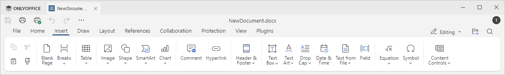

Kartica Umetanje
Kartica Umetanje u Uređivaču dokumenata omogućava dodavanje nekih elemenata za formatiranje stranice, kao i vizuelnih objekata i komentara.
Odgovarajući prozor u Online Uređivaču dokumenata:

Odgovarajući prozor u Desktop Uređivaču dokumenata:

Pomoću ove kartice možete:
- ubaciti praznu stranicu,
- ubaciti prelome stranica, prelome sekcija i prelome kolona,
- ubaciti tabele, slike, grafikone, oblike,
- ubaciti hiperveze, komentare,
- ubaciti zaglavlja i podnožja, brojeve stranica, datum i vreme,
- ubaciti tekstualne okvire i tekstualnu umetnost, jednačine, simbole, kapice na početku pasusa, tekst iz fajla, kontrole sadržaja,
- ubaciti SmartArt objekte.